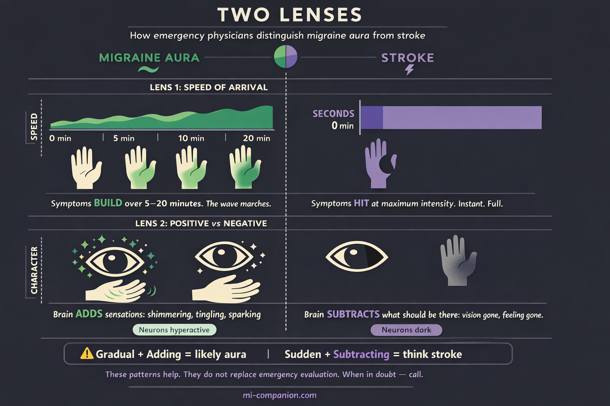

By Rustam Iuldashov
30 years lived experience with chronic migraine | Sources: 24 peer-reviewed references including Stroke (n=1,000), NEJM ECASS III (n=821), Medicine meta-analysis (9 studies), Frontiers in Neurology (n=368) | Last updated: March 12, 2026
Medical Review: This content is based on peer-reviewed research from Stroke, New England Journal of Medicine, Medicine, Frontiers in Neurology, Nature Reviews Neurology, Lancet Neurology, Cephalalgia, BMJ, Journal of Neuroimaging, and Current Treatment Options in Neurology.
Important Notice: This article is for informational purposes only and does not replace professional medical advice. The author is not a licensed physician or healthcare professional. If you suspect a stroke, call emergency services immediately.
Key Takeaways
- Migraine aura can produce symptoms identical to stroke: numbness, weakness, speech difficulty, vision loss
- The key clinical distinction: aura symptoms march gradually over minutes; stroke symptoms arrive suddenly at maximum intensity
- BE-FAST (Balance, Eyes, Face, Arms, Speech, Time) identifies stroke — if any element appears suddenly, call emergency services
- During stroke, approximately 1.9 million neurons die per minute; treatment within 4.5 hours dramatically improves outcomes[7][8]
- Migraine with aura roughly doubles ischemic stroke risk; smoking and estrogen-containing contraceptives multiply it further[17][19]
- If symptoms are new, sudden, or different from your usual pattern — always seek emergency evaluation
- When in doubt, always call; the cost of a false alarm is infinitely lower than the cost of a missed stroke
Your left hand goes numb.
It starts in the fingertips — a tingling that climbs the wrist, the forearm, the shoulder. Your tongue thickens. You open your mouth to speak, and the word you need is gone. Not at the tip of your tongue. Gone. Like a file deleted mid-sentence.
You’ve had migraine aura before. The shimmering zigzags, the expanding blind spot — you know those. But this isn’t that. This feels like your body is powering down, one region at a time.
The question lands like a blow: Is this a stroke?
Here’s what makes it terrifying: you might be right.
The Overlap Nobody Mentions
Most descriptions of migraine aura stop at vision — zigzag lines, shimmering crescents. But aura doesn’t stop at vision. The same electrical wave that warps what you see can sweep through other cortical regions and produce symptoms indistinguishable from stroke.[1]
Sensory aura causes numbness or tingling that starts in the hand and marches up the arm, sometimes reaching the face and tongue.[2] Language aura scrambles word retrieval, sentence construction, comprehension.[3] And motor aura — the rarest, most terrifying form — causes genuine weakness on one side of the body.[4]
A hand that can’t grip. A face that droops. Speech that dissolves.
These aren’t hypothetical. They fill emergency rooms. Migraine with aura ranks as the third most common condition mistaken for stroke, accounting for up to ten percent of all stroke mimics.[5] One review found that eighteen percent of patients who received emergency clot-dissolving medication weren’t having a stroke at all — they were experiencing migraine aura.[6]
Up to 10% of all stroke mimics are migraine with aura[5]
18% of incorrect thrombolytic treatments were given to migraine patients[6]
3rd most common stroke mimic after seizures and psychiatric disorders[5]
The overlap is real. The consequences are real. And the ability to tell them apart sometimes matters more than anything else in medicine.
1.9 Million Neurons Per Minute
Here’s why you should never gamble with “maybe it’s just migraine.”
During an ischemic stroke — the kind caused by a blood clot blocking flow to the brain — approximately 1.9 million neurons die every minute that treatment is delayed.[7] Every hour without intervention, the brain ages 3.6 years.[7] The clot-dissolving drug alteplase can reverse the damage, but only within a narrow window: ideally three hours, sometimes up to four and a half.[8]
After that, the window slams shut.
Neurologists call this “time is brain.” It isn’t a slogan. It’s arithmetic. Every minute of hesitation — every “let me lie down and see” — destroys circuitry that will never regenerate.
When your hand goes numb and your words disappear, the calculation is brutal: if there is any chance this is a stroke, the cost of waiting exceeds the cost of being wrong. By orders of magnitude.
BE-FAST: The Decision Framework
Emergency physicians use a mnemonic to identify stroke: BE-FAST.[9]
B — Balance. Sudden difficulty walking, unexplained dizziness.
E — Eyes. Sudden blurred or double vision. Vision loss in one or both eyes.
F — Face. One side droops. Ask the person to smile — the asymmetry reveals itself.
A — Arms. One arm drifts downward when both are raised.
S — Speech. Slurred, confused, or impossible.
T — Time. Any of these appear — call emergency services. Now.
But BE-FAST captures what to look for. It doesn’t capture how to distinguish migraine from stroke. For that, you need two additional lenses.
Lens One: Speed of Arrival
Stroke hits like a switch. Maximum intensity within seconds.[10] One moment you’re fine. The next, half the body is offline.
Aura marches. Tingling starts in the fingertips and takes five, ten, twenty minutes to climb the arm.[2] Word-finding trouble doesn’t slam into you — it builds. This gradual spread reflects the slow electrical wave of cortical spreading depression, moving across the brain’s surface at two to five millimeters per minute.[11] Mapping this progression in your migraine map helps identify your unique signature.
Sudden and maximal = think stroke.
Gradual and spreading = think aura.
Lens Two: Positive Versus Negative
Migraine produces positive symptoms — the brain adding things that aren’t there. Shimmering. Tingling. Sparking.[12]
Stroke produces negative symptoms — the brain subtracting what should be there. A black void in your vision. Dead numbness. Silence where words should exist.[12]
Neurons hyperactive = aura.
Neurons dark = stroke.

But — and this word carries weight — these patterns are guidelines, not guarantees. Some strokes begin gradually. Some auras arrive suddenly. A 2022 study comparing 250 stroke patients with 118 migraine-with-aura patients found significant symptom overlap and concluded that clinical judgment and imaging are often necessary to distinguish them reliably.[13]
The patterns help. They do not replace emergency evaluation.
⚠️ When to Seek Emergency Care
Any sudden one-sided weakness, speech difficulty, facial drooping, vision loss, or loss of balance demands immediate emergency evaluation. Period. No exceptions — even if you have a long history of migraine with aura.
If you are experiencing symptoms that are new, sudden, severe, or different from your usual aura pattern, call your local emergency number immediately. Do not use this article to self-diagnose during a crisis.
What Happens in the ER
You’ve called. The ambulance arrives. Here’s what unfolds.
The emergency team runs BE-FAST en route. At the hospital, the clock starts. Goal: CT scan within twenty minutes of arrival.[14] The scan takes seconds. Its job is singular — rule out bleeding. If no hemorrhage appears and the clinical picture suggests stroke, the team prepares thrombolysis.
Here’s the dilemma migraine patients create. A CT scan during acute migraine aura looks normal.[15] So does a CT during early ischemic stroke.[15] More advanced imaging — CT perfusion, MRI with diffusion weighting — can distinguish the two, but these take time the treatment window doesn’t provide.[5]
≤20 minutes — target time from hospital arrival to CT scan[14]
4.5 hours — maximum treatment window for thrombolysis[8]
Extremely low risk — adverse events from thrombolysis given to migraine patients by mistake[16]
Doctors sometimes must decide before certainty arrives. The emergency medicine consensus: when in doubt, treat for stroke.[16] Research shows that clot-dissolving medication given to migraine patients by mistake carries an extremely low risk of serious complications.[16] Withholding treatment from an actual stroke patient carries a catastrophic one.
If this is your first episode, you’re getting the full workup. You should.
If you’ve experienced identical episodes before and carry an established diagnosis, tell the team. Your history is data. But don’t let familiarity override caution. Because the next truth changes how many people with aura think about their condition.
The Risk That’s Real
Migraine aura doesn’t just mimic stroke. It’s linked to it.
A 2024 meta-analysis of nine studies found that people with migraine with aura carry roughly 2.3 times the odds of ischemic stroke compared to those without migraine.[17] For women under forty-five, the relative risk concentrates further.[18]
The absolute risk remains small. Most people with aura will never have a stroke. But certain factors multiply it.
Women with migraine with aura who smoke and use estrogen-containing contraceptives face up to a seven-fold increase in stroke odds.[19] Smoking alone is the single most impactful modifiable risk factor.[18]
Several mechanisms may explain the connection. Cortical spreading depression — the wave behind aura — temporarily reduces blood flow in the affected brain region.[11] People who experience aura may have an increased tendency to form blood clots due to transiently narrowed vessels.[18] Shared genetic pathways link migraine and vascular disease.[5] The picture is incomplete. But the association is consistent enough that major guidelines now classify migraine with aura as a cardiovascular risk factor.
This information isn’t meant to frighten. It’s meant to arm. Because unlike migraine itself, stroke risk factors are mostly things you can change.
Your Action Protocol
In the acute moment — when symptoms hit:
Step 1: Pattern check. Is this your usual sequence — the familiar march, the familiar timing, the familiar character? If yes — observe, document, take your acute medication.
Step 2: Difference check. New symptoms. Faster onset. Longer duration. Weakness you’ve never had. One-sided deficits that don’t march or spread. If anything has changed — call emergency services and prepare your emergency kit.
Step 3: First-time rule. If you’ve never experienced these symptoms before — call. No exceptions. You have no baseline to compare against.
Step 4: Doubt rule. If you’re unsure — call. The cost of a false alarm is an ER visit and some embarrassment. The cost of a missed stroke is permanent.
For the long game — reducing your stroke risk:
If you smoke, this is the single most important change you can make. Stop.[18] Discuss contraception with your doctor — estrogen-containing methods carry additional risk for women with aura.[20] Manage blood pressure, cholesterol, blood sugar — the same cardiovascular basics that protect everyone.[18] Prepare a list of these factors for your first neurologist visit to discuss risk management. Report any change in your aura pattern to your neurologist: increased frequency, longer duration, new motor symptoms, or aura lasting beyond sixty minutes.[21]
The Question That Stays
Thirty years with migraine aura has taught me something uncomfortable: the question never fully resolves.
Each aura, I inventory what’s familiar. The zigzag shimmer — expected. The tingling — known. The momentary hesitation before a word arrives — routine.
Each aura, I check for what’s new.
I never stop. Because the day I assume every neurological symptom is “just migraine” is the day I stop listening to what my brain is telling me.
That vigilance isn’t anxiety. It’s respect for a system complex enough to produce both a harmless electrical wave and a life-threatening vascular emergency — sometimes with identical calling cards.
Know your pattern. Document your pattern. Teach the people around you your pattern.
And when the pattern breaks — act fast. Because sometimes the question “Is this a stroke?” deserves a doctor’s answer.
Not yours.
⚕️ Important Medical Disclaimer
This article is for informational and educational purposes only and does not constitute medical advice, diagnosis, or treatment. The author, Rustam Iuldashov, is not a licensed physician, neurologist, or healthcare professional. He is a patient advocate with 30 years of personal experience living with chronic migraine.
All clinical claims in this article are sourced from peer-reviewed research published in indexed medical journals. Study designs and sample sizes are noted where applicable.
Always consult a qualified healthcare provider for questions about your individual health, migraine treatment, or medication decisions.
Nothing in this article should delay or replace calling emergency services if you suspect a stroke. When in doubt, always call for help immediately. This content was last reviewed for accuracy on March 12, 2026.
References
- International Headache Society. “The International Classification of Headache Disorders, 3rd edition.” Cephalalgia, 38(1):1–211 (2018). doi:10.1177/0333102417738202. Study design: Clinical guideline. n=N/A.
- Russell MB, Ducros A. “Sporadic and familial hemiplegic migraine: pathophysiological mechanisms, clinical characteristics, diagnosis, and management.” Lancet Neurology, 10(5):457–470 (2011). doi:10.1016/S1474-4422(11)70048-5. Study design: Review. n=N/A.
- Goadsby PJ, Holland PR, Martins-Oliveira M, et al. “Pathophysiology of Migraine: A Disorder of Sensory Processing.” Physiological Reviews, 97(2):553–622 (2017). doi:10.1152/physrev.00034.2015. Study design: Review. n=N/A.
- StatPearls. “Hemiplegic Migraine.” National Center for Biotechnology Information. Updated July 2023. Study design: Clinical reference. n=N/A.
- Frontiers in Neurology. “Reviewing migraine-associated pathophysiology and its impact on elevated stroke risk.” Frontiers in Neurology, 15:1435208 (2024). doi:10.3389/fneur.2024.1435208. Study design: Systematic review. n=N/A.
- Terrin A, et al. [cited in Frontiers in Neurology 2024]. Finding: 18% of incorrect thrombolytic treatments administered to migraine patients. Study design: Systematic review. n=N/A.
- Saver JL. “Time is brain—quantified.” Stroke, 37(1):263–266 (2006). doi:10.1161/01.STR.0000196957.55928.ab. Study design: Systematic literature review / neurostereological estimate. n=N/A.
- Hacke W, Kaste M, Bluhmki E, et al. “Thrombolysis with alteplase 3 to 4.5 hours after acute ischemic stroke.” New England Journal of Medicine, 359(13):1317–1329 (2008). doi:10.1056/NEJMoa0804656. Study design: RCT (ECASS III). n=821.
- Lima FO, et al. “BE-FAST: A Sensitive Screening Tool to Identify In-Hospital Acute Ischemic Stroke.” Journal of Neuroimaging, 30(3):291–296 (2020). doi:10.1111/jon.12698. Study design: Retrospective analysis. n=1,965.
- Scutelnic A, Kreis LA, Beyeler M, et al. “Migraine aura-like symptoms at onset of stroke and stroke-like symptoms in migraine with aura.” Frontiers in Neurology, 13:1004058 (2022). doi:10.3389/fneur.2022.1004058. Study design: Prospective observational. n=368.
- Charles AC, Baca SM. “Cortical spreading depression and migraine.” Nature Reviews Neurology, 9(11):637–644 (2013). doi:10.1038/nrneurol.2013.192. Study design: Review. n=N/A.
- McAllister P. [cited in] Neurology Advisor. “Addressing Migraine That Mimics Stroke.” 2024. Study design: Expert interview.
- Scutelnic A, et al. “Migraine aura-like symptoms at onset of stroke and stroke-like symptoms in migraine with aura.” Frontiers in Neurology, 13:1004058 (2022). doi:10.3389/fneur.2022.1004058. Study design: Prospective observational. n=368 (250 stroke + 118 MwA).
- American Heart Association / American Stroke Association. Target: Stroke initiative. Door-to-imaging goal ≤20 minutes. Study design: Clinical guideline. n=N/A.
- Strambo D, et al. “Computed tomographic perfusion abnormalities in acute migraine with aura.” Cephalalgia (2022). doi:10.1177/03331024221134560. Study design: Retrospective. n=47.
- Purdy RA, Diener HC. Commentary 2018. Finding: thrombolysis in migraine with aura carries extremely low risk. Study design: Expert consensus.
- Liu Y, et al. “Migraine and the correlation between stroke: A systematic review and meta-analysis.” Medicine, 103(45):e40315 (2024). doi:10.1097/MD.0000000000040315. Study design: Meta-analysis. n=9 studies; OR=2.04 overall; migraine with aura OR=2.32 (95% CI 1.70–3.18).
- American Migraine Foundation / Diener C, Tietjen GE. “Migraine and Stroke.” AmericanMigraineFoundation.org (2025). Study design: Expert review. Women’s Health Study, n≈40,000.
- MacClellan LR, et al. “Probable Migraine With Visual Aura and Risk of Ischemic Stroke.” Stroke, 38:2438–2445 (2007). doi:10.1161/STROKEAHA.107.488395. Study design: Population-based case-control. n=1,000.
- European Headache Federation / multiple clinical guidelines. Estrogen-containing contraceptives not recommended for women with migraine with aura. Study design: Clinical guideline. n=N/A.
- Pelzer N, Stam AH, Haan J, Ferrari MD, Terwindt GM. “Familial and sporadic hemiplegic migraine: diagnosis and treatment.” Current Treatment Options in Neurology, 15:13–27 (2013). doi:10.1007/s11940-012-0208-3. Study design: Review. n=N/A.
- Schürks M, Rist PM, Bigal ME, Buring JE, Lipton RB, Kurth T. “Migraine and cardiovascular disease: a systematic review and meta-analysis.” BMJ, 339:b3914 (2009). doi:10.1136/bmj.b3914. Study design: Meta-analysis. n=622,381 across 21 studies.
- Neves Briard J, et al. “Stroke Mimics.” Canadian Journal of Emergency Medicine (2018). Study design: Retrospective. n=950.
- Headache Australia. “Hemiplegic Migraine — The Migraine That Mimics a Stroke.” headacheaustralia.org.au (2025). Study design: Clinical review. n=N/A.

How We Create Content
- Peer-reviewed sources only. Stroke, New England Journal of Medicine, Medicine, Frontiers in Neurology, Nature Reviews Neurology, Lancet Neurology, Physiological Reviews, Cephalalgia, BMJ, Journal of Neuroimaging, Current Treatment Options in Neurology, Canadian Journal of Emergency Medicine.
- Study transparency. Study design and sample sizes noted for all clinical references.
- Source verification. All claims backed by numbered references with DOI links.
- Experience + Science. 30 years personal migraine experience combined with peer-reviewed evidence.
- Regular updates. Articles reviewed when significant new research emerges.
- No conflicts of interest. No funding from pharmaceutical companies, medical device manufacturers, or emergency services organizations.
Know Your Pattern. Document Your Pattern.
Migraine Companion helps you track every aura — what you see, what you feel, how long it lasts. Over time, your pattern becomes your early warning system. And when the pattern breaks, you’ll know.
Last reviewed: March 2026
Next scheduled review: September 2026